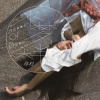
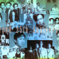
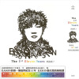

他跟我聊到樱桃树、灰尘以及一座山

| 收藏文章♥ | 包含音乐▶ | 相关阅读✈ | 该作者更多▦ | 查看评论▶ |
“我只愿中国的少年只是向上走，不必理会这冷笑和暗箭。”
易烊千玺在雅加达参加亚运会闭幕式的时候接受了红秀杂志的专访： 每个人都挺深的，只要你慢慢去找自己。 我这人，对别人基本没什么好奇，自己想什么样就什么样。 现在稍微入门了一点点，其实挺喜欢探索状态。 就是桥洞底下会有的，支一个摊儿， 打扮得特别邋遢，没人认得出我，坐在那给别人修鞋， 去上门开锁，就是这种的。 都是三分钟热度，但就这三分钟热度， 我也想去学一学。 我会想很多东西， 各种想， 想着想着自己都忘了，就乱了，就会烦躁， 又得重新整理。所以特别想放空。 我已经三年没有同学了，身边都是初中朋友。 我喜欢集体生活，但我不会太参与进去， 因为我的性格不是那么爱热闹， 但我心里喜欢跟大家一起学习一起玩。 多多少少感觉到了(影响)。 说到这个又痞又野的新角色， 他说，找他的状态时的确比较容易找得到， 可能也因为戏里都是真打。不像古装戏是耍招式。 我觉得自己身上有这样的因子。但其实我生活里不太会像他那样外露。 因为注意各方面细节，整个人就会不自觉地很紧张。 其实正常的一个人，是什么状态就是什么状态， 不会自己去想五官啊手脚怎么怎么，反面演的时候会过头。 他又说，我都不知道我是什么戏路的，反正就演。
之前采访中你说希望你的世界是有人的，反过来问这个问题， 如果世界上所有人实然间得了种疯狂的“病”，只有你一个人头脑清醒， 你会怎么办?Y (易烊千玺) ：我会想看看原本在我世界里那个人， 他现在是什么样了，而我可能会继续保持清醒下去。
G:会不会去唤醒别人，把别人拉回到正轨?Y:如果别人都变了的话， 你也不知道正轨到底是谁那一方。你觉得自己是正轨，那其实世界的正轨可能已经在他们那边了。 能拉的话，我肯定会拉他们。但如果他们那样是美好的，我觉得也无妨。
G:现在再给你杯水，喝下之后就会和他们样，但也不再清醒， 你会喝这个水吗?Y:如果喝了之后，能融人他们，我也不感觉痛苦，就喝吧 。G：现在工作都是操控在你的手里的是吗?Y :可以这么说，都是我自己选的G: 你觉得自己是高级脸吗?Y ：还好吧。G:害怕被捧杀?Y :我不太看别人对我的评论。 G:你觉得这是正确的方法吗?Y :这是适合我的方法，我也不会刻意屏蔽自己的消息， 还是和大多数人一样与外界沟通，保持着和自己同步。

G :想过逃离采访吗?Y :还好，没有。采访就是种交流形式吧。G:《少年的你》的原著里对北野的描述，有句“这是他想要保护，别人说不得一句不好的东西”。 你心中有这样的存在吗?Y：没有。G:最后一个问题， 有粉丝说能多吃点肉吗?太瘦了。Y:可以。G:这么乖巧的回答?是因为电影才瘦的吧?Y :对，这个角色不能太壮。 其实我不太容易增肥，不太容易减肥。这两年正常吃正常工作，一直都110,没上也没下。 不能说自己多满意，就正常，该怎么样就怎么样。 G:还希望可以更有肌肉线条一些?Y :我自己不太会希望更有肌肉了，因为我本身懒， 但这部戏有要求，是有练了一点点。
易烊千玺简介
李荣浩，1985年7月11日生于蚌埠，中国流行音乐制作人、歌手、吉他手。 曾为众多艺人创作歌曲以及担任制作人，也曾为多部电影与多款电子游戏制作音乐。2013年9月17日发行个人首张原创专辑《模特》， 凭借这张专辑入围第25届金曲奖最佳国语男歌手奖、最佳新人奖、最佳专辑制作人、最佳国语专辑、最佳作词奖等五项大奖提名，成为最大黑马，实现了从制作人到歌手的华丽转身。
人生经历
从小自学吉他和低音提琴，后师从低音提琴演奏家尹富源教授。 2004年接受音乐杂志《吉他平方》专访并发表单曲《烦》，同年与乐队合作获得江苏省第五届流行音乐大赛一等奖。 2005年接受音乐杂志《现代乐手》专访并发表单曲《DREAM》，同年9月担任《我的音乐梦想》系列吉他丛书主编，后正式成为吉他中国乐手。 2005年签约日本艾回唱片，成为其台湾地区独家创作艺人。 2007年，李荣浩赴台湾参与制作信专辑《我就是我》，并担任其“2008我就是我·北京演唱会”的表演嘉宾。 2008年参与制作赵薇专辑《我们都是大导演》，并担任发布会表演嘉宾；同年担任陈坤专辑《谜&Me》的专辑制作人。
2010年2月4日，担任陈坤首场演唱会《谜》音乐总监&吉他手。2011年开始担任东申童画《行走的力量》音乐总监。 2013年8月，首度携手好友陈坤演绎全新单曲《演员和歌手》 ； 同年9月，发行首张个人专辑《模特》，举办“Hao·Live——《模特》专辑音享会” 演绎专辑中的6首热门歌曲，圈中好友李泉、权振东都前来大力支持，另外模特陆瑶、王梦雅、那广子等也亲自到场支持 。 2014年3月，发行概念EP《作曲家》，获王菲力荐，称其为“帅歌”， 同月入围MusicRadio中国TOP排行榜年度最受欢迎新人；同年4月，荣获音悦台第二届“音悦v榜”年度最佳音悦人，成为了颁奖典礼中最大黑马 ； 5月参加《全球中文音乐榜上榜》，现场打榜演唱《作曲家》，同月凭借专辑《模特》入围第25届金曲奖最佳国语男歌手奖、最佳新人奖、最佳专辑制作人、最佳国语专辑、最佳作词奖等五项大奖提名， 成为最大黑马 。
相似人物歌手
|  | |
| ♬陈粒 | ♬小半 |
|  | |
| ♬五月天 | ♬阿黛尔Adode |
|  | |
| ♬李宗盛 | ♬陈奕迅 |
{kind=link}